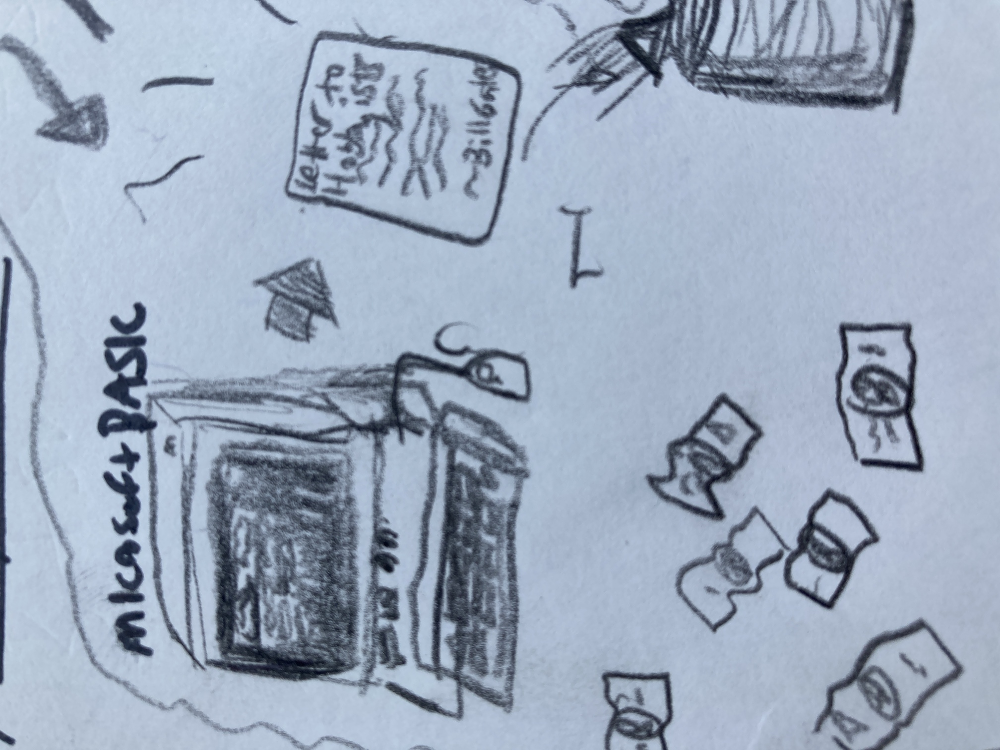
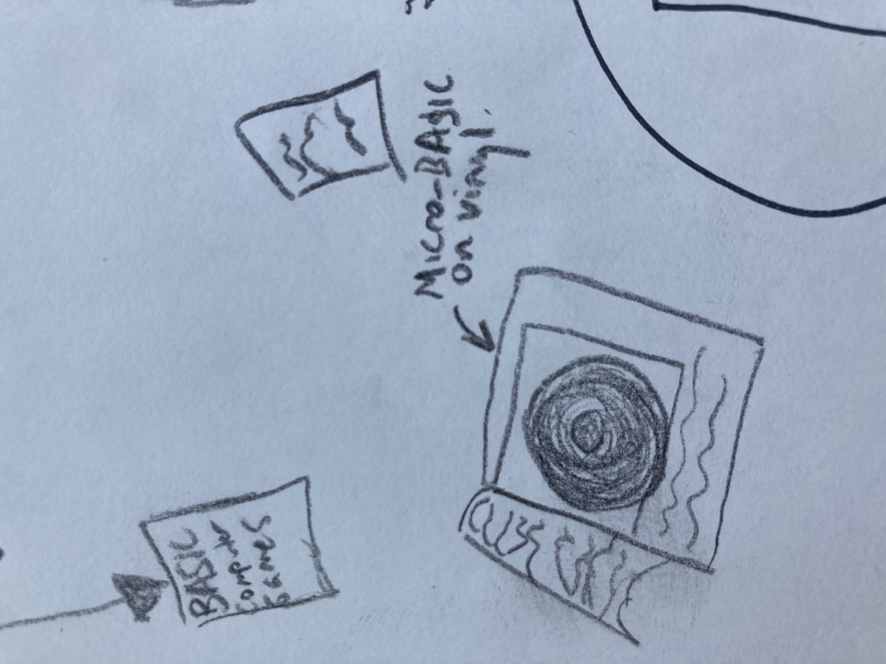
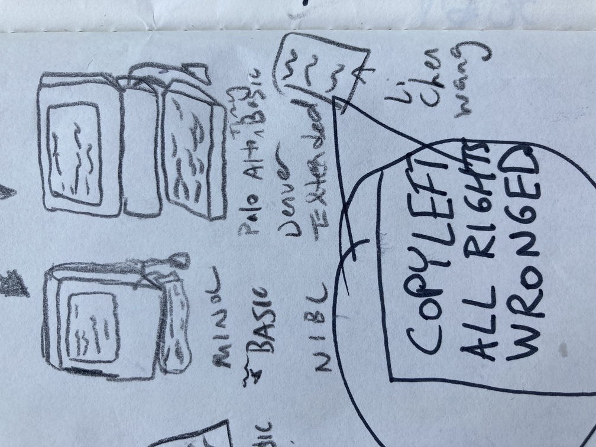
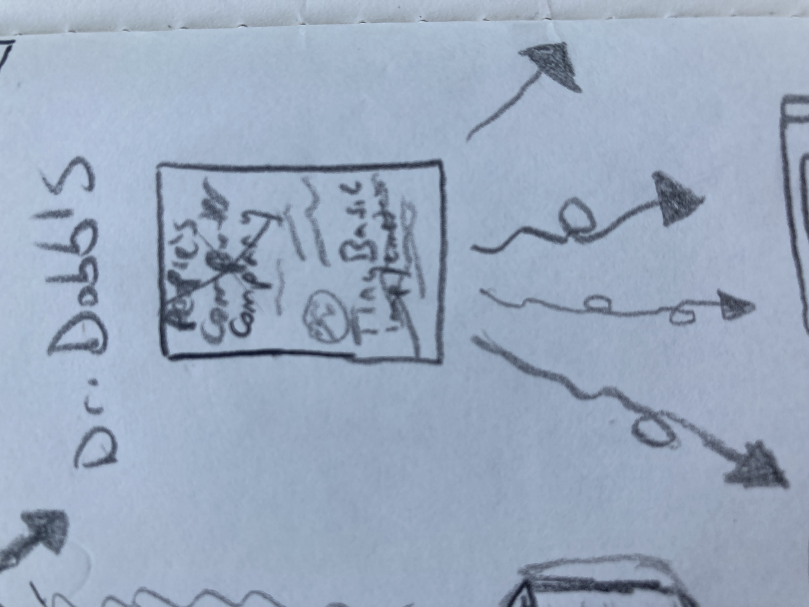
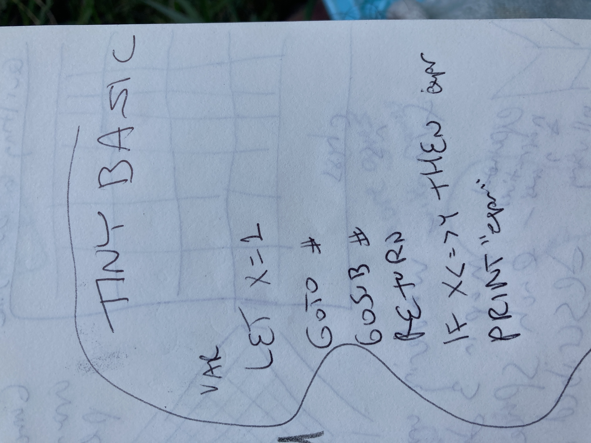

2022-06-26
by Lee2sman
/^\
| |
/\ |_| /\
| \___/' `\___/ |
\_/ \___/ \_/
|\__/ \__/|
|/ \___/ \|
./\__/ \__/\,
| / \___/ \ |
\/ V \/
Lately I've been getting into BASIC. I was a kid in the 80s and 90s and I remember those computers that would boot into a BASIC interpreter. I didn't have one of those but came in contact with one every year or two and played a handful of text games on them. I was aware of some of the commands and syntax, GOTO and the like, and I have looked through the classic BASIC Video Games book a number of times. The ecosystem of BASIC interested me but I hadn't delved too deeply. Recently I read about Tiny BASIC:
Tiny BASIC is a family of dialects of the BASIC programming language that can fit into 4 or fewer KBs of memory. Tiny BASIC was designed in response to the open letter published by Bill Gates complaining about users pirating Altair BASIC, which sold for $150. Tiny BASIC was intended to be a completely free version of BASIC that would run on the same early microcomputers. --Wikipedia [1]

Originally, Tiny BASIC was a specification, not an implementation. The People's Computer Company published a newsletter, almost like a photocopied zine to my eyes, with articles, tutorials, comix, all aimed at the nascent hobbyist computer community. They invited Dennis Allison from Stanford University's Computer Science faculty to write the spec.
The magic of a good language is the ease with which a particular idea may be expressed. The assembly language of most microcomputers is very complex, very powerful, and very hard to learn. The Tiny BASIC project at PCC represents our attempt to give the hobbyist a more human-oriented language or notation with which to encode his programs. [2]
The newsletter goes on to describe the motivation for the project, a free implementation of the BASIC language, and the community working on it currently. It specifies what the language could entail, how to solve various problems, a discussion on creating a compiler versus an interpreter, what it will take to build one's own Tiny BASIC, and a request for feedback and ideas. It also contained some simple BASIC games.

One of the earlier implementations was Dr. Li-Chen Wang's Palo Alto Tiny BASIC, where he may have devised the term copyleft to describe this process of source code being openly shared and modified and re-published. He affixed the notice "COPYLEFT ALL RIGHTS WRONGED" when he published it in 1976.
BASIC flourished as a language throughout the 80s and into the 90s. Many versions of BASIC proliferated, and many versions of Tiny BASIC as well, including some that grew into more extended versions, sometimes including the ability to create graphics or sound, rather than just ASCII text.
In fact, the inital Tiny BASIC implementations allowed printing text output but couldn't receive text string inputs. These were very simple implementations of BASIC as it had to work with low memory usage. They allowed for (integer) variables, subroutines via gosub/return, if-statements (though not if-then or if-then-else), numerical though not char/string input, and not much else!

The allowed statements were:
IF - THEN statement
GOTO #
INPUT var
LET var=expression
GOSUB #
RETURN
CLEAR
LIST
RUN
END To wrap up, this is the WANTED ad from Volume 1, Number 1 of Dr. Dobb's in the section on My, How Tiny BASIC Growed,
WANTED: Entirely new, never before seen, Tiny Languages, imported from another planet or invented here on Earth. Especially languages for kids using home computers that talk to tvs or play music or run model trains or...
Wikipedia article on TinyBASIC
Dr. Dobb's Journal of Computer Calisthenics and Orthodontia, January, 1976 (PDF)
Tiny BASIC Interpreter and Compiler Portal
Minimal random number generator for Tiny BASIC